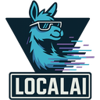

Open-source local AI agents (2026)
Local AI agents with public source code you can read, self-host and extend. Here are the top 25 of 82 from the AgentScout directory.
Quick answer: the top picks on this list, ranked by GitHub stars and listing maturity, are Langflow, ComfyUI and OpenAI Codex CLI, out of 25 tools listed below. At a glance: 25 open-source, 25 free or freemium and 22 local or self-hosted across 25 link-checked tools (last verified ).
Verified on : every tool link on this page was checked by our daily link check. No paid placements.
Ranked comparison (top 10)
| # | Tool | Pricing | Best for | Open source | Runs locally | GitHub stars |
|---|---|---|---|---|---|---|
| 1 | Open source + cloud | write code, automate workflows | Yes | Offline | 156,158 | |
| 2 | ComfyUI | Open source + cloud | video generation, generate images | Yes | 144,113 | |
| 3 | OpenAI Codex CLI | Open source | write code, control a computer | Yes | Offline | 131,661 |
| 4 | Open source + cloud | automate the browser | Yes | Self-hosted | 119,558 | |
| 5 | Open source | build an agent, connect tools via MCP | Yes | Offline | 78,329 | |
| 6 | AnythingLLM | Open source + cloud | control a computer | Yes | Offline | 67,747 |
| 7 | Open source | research the web, give agents memory | Yes | Offline | 60,133 | |
| 8 |  LocalAI | Open source | voice & phone calls, connect tools via MCP | Yes | Offline | 50,071 |
| 9 | Chat2DB | Open source | data & analytics | Yes | Offline | 28,348 |
| 10 | Open source | write code | Yes | Offline | 27,578 |
Updated
How we picked and ranked: tools are matched by category, the pricing each maker states and what each tool says it does. They are ranked by GitHub stars as recorded on each listing (link checks 2026-11-28); tools without a tracked repo follow, by listing maturity. No paid placements.

1. Langflow
Visual drag-and-drop builder for AI agents and workflows that you can run locally, deploy as an API or expose as an MCP server.
Pricing (as stated): Open source + cloud · Mature
2. ComfyUI
ComfyUI is a GPL-3.0 node-based engine and interface for image, video, audio and 3D generation: you wire models, samplers and post-processing into a visual graph, save it as a reusable workflow and run it locally on your own GPU or in the hosted Comfy Cloud. It supports current open models such as Wan, LTX, Hunyuan, Flux and Stable Diffusion, offers an API and a large custom-node ecosystem, and only re-executes the parts of a graph that changed.
Pricing (as stated): Desktop app free and open source (GPL-3.0); Comfy Cloud Standard $20/mo ($16 yearly), Creator $35/mo, Pro $100/mo, Team $700/mo · Active
3. OpenAI Codex CLI
Codex CLI is OpenAI's Apache-2.0 coding agent that runs locally in your terminal, reading your repository, editing files and running commands, with standalone installers for macOS, Linux and Windows plus npm and Homebrew. The same agent is available as IDE extensions for VS Code, Cursor and Windsurf, a desktop app via codex app, and the cloud-based Codex Web in ChatGPT.
Pricing (as stated): Open source CLI; usage through a ChatGPT plan or OpenAI API key. · Mature

4. Browser Use
Browser Use is an MIT-licensed open-source browser agent for Python and TypeScript that lets an LLM navigate sites, fill forms and complete multi-step tasks like booking an appointment, running locally with any model. Browser Use Cloud adds hosted stealth browsers with CAPTCHA handling and residential proxies, a CLI for your own browser tasks, and a hosted agent API.
Pricing (as stated): Open source library is free; cloud browsers from about $0.02 per browser-hour. · Mature

5. Headroom
Headroom is an Apache-2.0 library, proxy and MCP server that compresses what an AI agent reads, including tool outputs, logs, files, RAG chunks and chat history, before it reaches the model, so you send fewer input tokens for the same answers. The project's own measurements show 21 to 57 percent fewer input tokens across four agent scenarios and over 90 percent on repeated JSON arrays and log lines, with little saving on prose. Compression runs locally, and it is on PyPI and npm as headroom-ai.
Pricing (as stated): Free and open source (Apache-2.0); a paid Headroom for Teams plan is offered. · Mature
6. AnythingLLM
Local-first desktop and server app for chatting with your documents, running agents and connecting any LLM.
Pricing (as stated): Open source + cloud · Mature

7. MemPalace
MemPalace is an MIT-licensed, local-first memory system for AI agents that stores conversation history as verbatim text (it does not summarize or paraphrase) and retrieves it with semantic search. People and projects are organised as wings, topics as rooms and original content in drawers so searches can be scoped, and the retrieval backend is pluggable (ChromaDB by default) with no API calls required. Official docs are on the MemPalace site. A release shipped on 14 Oct 2026.
Pricing (as stated): Free and open source (MIT). · Mature
8. LocalAI
LocalAI is an MIT-licensed, self-hosted AI engine that runs LLMs, vision, voice, image and video models on your own hardware, including CPU-only machines, behind drop-in OpenAI-, Anthropic- and ElevenLabs-compatible APIs. Each backend (llama.cpp, vLLM, whisper.cpp, stable-diffusion, MLX and others) is pulled only when a model needs it, it runs on NVIDIA, AMD, Intel, Apple Silicon or Vulkan, and it adds multi-user API keys, quotas and saved agents that can use tools, MCP servers, skills and files.
Pricing (as stated): Open source · Mature
9. Chat2DB
Chat2DB is a local-first database client where you ask questions in plain language and get SQL
Pricing (as stated): Open source · Mature

10. agenticSeek
Fully local autonomous agent that browses, codes and plans without paid APIs.
Pricing (as stated): Open source · Mature

11. Hummingbot
Hummingbot is an Apache-2.0 framework for designing and running automated crypto trading bots on centralized and decentralized exchanges. You pick or script a strategy (market making, arbitrage, directional and more), connect exchange API keys and run it locally or in Docker, with connectors for 140+ trading venues. The community says its users have generated over $34 billion in trading volume, and the project adds AI-agent tooling and an MCP server for strategy automation.
Pricing (as stated): Open source · Mature

12. xerj
A local-first search engine and MCP server for agents: one Rust binary indexes code, docs, logs, CSV/JSONL and PDFs for full-text, vector and hybrid search plus agent memory, behind an Elasticsearch-compatible API.
Pricing (as stated): Free Community edition (Apache-2.0); paid Professional and Enterprise support. · Mature
13. Dagger
Automation engine to build, test and ship any codebase. Runs locally, in CI, or directly in the cloud
Pricing (as stated): Open source + cloud · Mature

14. Cc Haha
Claude Code / AI Agent ： Agent 、Git Worktree、 Diff、 、 、Computer Use、 ； 、 、 H5 。 Local-first Claude Code / AI Agent desktop workspace: multi-agent teams, Git worktrees, diffs, skills marketplace.
Pricing (as stated): Open source + cloud · Mature

15. Freebuff
Freebuff is an Apache-2.0 coding agent from Codebuff. The README says there is no subscription, no credits and no API key, and that text ads pay for the included models. It names four products: a desktop app that runs agents locally, a CLI, a web builder for full-stack apps, and a cloud runner for GitHub repositories. GitHub CodebuffAI/freebuff showed 14,336 stars and 1,551 forks on 27 Nov 2026.
Pricing (as stated): Apache-2.0. The README says access is free and funded by text ads. No subscription price was listed. Checked 27 Nov 2026. · Mature
16. BrowserOS
Open-source agentic browser that runs AI agents locally.
Pricing (as stated): Open source · Mature
17. EverOS
Local-first, portable memory layer for AI agents stored as Markdown.
Pricing (as stated): Open source · Mature
18. QuantDinger
QuantDinger is an open-source AI quant research stack for market analysis and strategy workflows that agents and researchers can run locally or in their own infra.
Pricing (as stated): Open source · Mature

19. Ekko Studio
Ekko Studio (formerly Hermes Studio / Hermes Web UI) is a local-first desktop app and self-hosted web console for multi-agent chat, coding and visual workflows, supporting Hermes Agent, Ekko Agent and 14 coding-agent integrations including Claude Code and Codex, with group chat, voice, files and human approval gates.
Pricing (as stated): Open source · Mature

20. microsandbox
Local-first microVM runtime for running untrusted agent code safely.
Pricing (as stated): Open source · Mature
21. ChatLab
ChatLab is a local-first social memory agent that relives and explores your chat history with SQL and AI agents.
Pricing (as stated): Open source · Mature
22. PI Desktop
Local-first AI coding agent desktop: Electron + Rust host core + pi Agent Harness + user-installable plugins
Pricing (as stated): Open source + cloud · Mature
23. Loopx
Turn long-horizon goals into verifiable results. A local-first semantic control plane and research workbench for long-running agent teams, across sessions and runtimes.
Pricing (as stated): Open source · Mature
24. DeepChat
DeepChat is an open-source, local-first desktop client for AI agents, with MCP, skills, ACP and remote control from messaging apps. A release on 12 Nov 2026 refreshed the sidebar, settings search and message minimap. Apache-2.0. You bring model keys or run a local model.
Pricing (as stated): Free and open source (Apache-2.0). Model keys or local models are separate. · Mature
25. Lemonade
Local server that runs optimized LLMs on your GPU or NPU for local AI apps and agents.
Pricing (as stated): Open source · Mature
FAQ
What are the best open-source local AI agents?
Ranked by tracked GitHub stars, the top open-source local AI agents in our directory are Langflow, ComfyUI, OpenAI Codex CLI, Browser Use, Headroom. Stars measure popularity, not fit, so compare a few against your own task.
How many open-source local AI agents does AgentScout list?
82 tools match. This page shows the top 25. Pricing mix on this page: Open source (18), Open source + cloud (7).
How much do these tools cost?
Pricing is what each maker states on their site. Open-source tools are free to self-host but may need a paid model API key or offer paid cloud plans; freemium tools have a free plan with limits. Check each official site.
Where can I see every tool for running agents locally?
Our task page lists all 98 tools we match to running agents locally.
Related
Best-of lists
Related categories
Facts come from our directory listings; pricing is as each maker states it and can change. Check official sites before you choose.